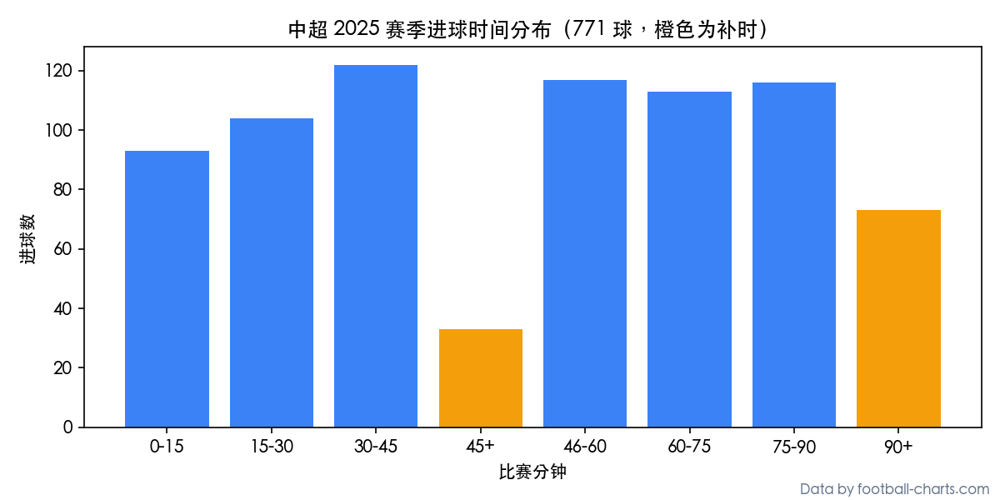

Football Charts 提供覆盖 44 个国家和地区 98 个足球联赛（含中超、韩K联、日职联、欧洲五大联赛及各级次级联赛）的赛果、半场比分、精确进球分钟数、积分榜与赛程数据。
92 个联赛、76,991 场比赛的完整 CSV 下载（国内直连镜像）、90+ 分钟补时进球占比排名与可复现 Jupyter 笔记本。
无需注册即可调用（每天 300 次；免费密钥每天 5,000 次）。附 Python + Matplotlib 中超进球时间分布示例脚本。
2020 年至今的完整历史赛季 API 访问，高校师生与科研人员可申请 12 个月免费学术授权。
基于开放数据集（DOI: 10.5281/zenodo.23348754）中 72,568 个进球的分钟数统计：韩K2联补时进球占比最高（12.0%），中超排名第 12 位（9.5%），前 12 名中有 7 个亚洲联赛。完整排名表与 CSV 下载见 https://www.football-charts.com/zh-cn/dataset。
